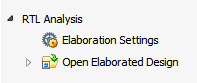

Elaborated Design 環境には、さまざまなデザイン ソース (RTL、DCP、EDF)、デザイン制約 (XDC) およびターゲット デバイスまたはボードのインメモリ デザイン ビューが含まれます。最上位デザインの RTL エラボレーションでは、RTL リント チェックが実行され、RTL からロジックが推論され、データ構造が構築され、オプションでデザイン制約が適用されます。
RTL ソース ファイル内の構文エラーをチェックするには、エラボレート済みデザインを開くのが一番速い方法です。エラボレーション中は、基本的な構文がチェックされ、構文エラーがないかどうか検証され、パラメーターまたはジェネリックが評価され、ポート サイズが設定され、グローバル接続がチェックされます。
Elaborated Design 環境は、エラボレート済みデザインを開いた状態で Flow Navigator の [RTL Analysis] をクリックするとアクティベートできます。
|
Elaborated Design 環境からは、次が実行できます。
|
 |
関連項目
| 『Vivado® Design Suite ユーザー ガイド : システム レベル デザイン入力』 (UG895) の「RTL デザインのエラボレーション」 | |
 |
Vivado Design Suite QuickTake ビデオ : Vivado IDE 入門 |